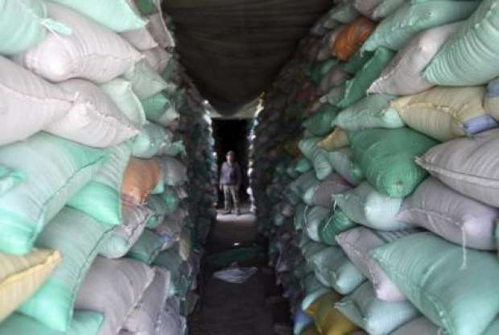

أحدث الأخبار
- الزمالك يكتسح رينجرز النيجيري بأربعة أهداف مقابل هدف وحيد
- القضاء الإداري يقضي بحل اتحاد الكرة وبطلان الانتخابات الأخيرة
- مقتل 3 أشخاص وإصابة 3 آخرين في حادث مروري بالبحيرة
- وزير الخارجية يجري اتصالاً مع رئيس المجلس الرئاسي الليبي
- عاصمة مصر تتجه لزيادة سكانية نصف مليون العام الجاري
- باولو يقود هجوم الزمالك أمام رينجرز في دوري الأبطال
- المالية تعفي المطاعم غير السياحية من ضريبة القيمة المضافة بشروط
- "القضاء الإداري" يلزم الجامعة الأمريكية بتحصيل مصروفاتها بالجنيه المصري
فلاحون يروون معاناتهم في تصريف القمح.. والزراعة تحتفي بالمحصول
حصاد القمح - صورة من رويترز
- مسئولو الزراعة والتموين يؤكدون "الشون مفتوحة ولا توجد مشاكل".. ومجلس الوزراء ينشئ غرفة عمليات
- مزارعون: نعتمد على إيراد القمح في سداد التزاماتنا .. وقصر استلام الأموال على صاحب الحيازة وقف حال
تعلن وزارة الزراعة بشكل شبه يومي عن كميات القمح التي استلمتها من المزارعين، والتي قالت، اليوم الأحد، إنها وصلت لنحو 1.2 مليون طن منذ بدء موسم التوريد، في منتصف الشهر الماضي، واحتفل رئيس الجمهورية، الأسبوع الماضي، بحصاد القمح من أراض حديثة الاستصلاح، بينما تتزايد شكاوى المزارعين في محافظات مختلفة من وجود عقبات عديدة في عملية التوريد تمنعهم حتى الآن من تسليم المحصول، الذي يعتمدون على إيراده في سداد التزاماتهم المختلفة.
وتعتزم الحكومة شراء 4 ملايين طن من القمح المحلي في الموسم الحالي، لتغطية جزء أساسي من احتياجات إنتاج الخبز المدعم.
شون لا تتسلم القمح
يقول عاطف، مزارع من المنيا، إنه حصد المحصول منذ 20 يوما ولم يتمكن من تسليمه إلى الشونة، "بيقولولي ما عندناش أوامر بالاستلام. الناس بتستنى يوم تسليم القمح ده من السنة للسنة علشان تسدد كل المصاريف والالتزامات اللي عليها, فده وقف حال جامد"، مضيفا "بيكرّهوا الفلاح في زراعة القمح".
ويوضح صبحي، تاجر من المنيا، أن بعض المناطق لم تُفتح فيها الشون للاستلام، "ثلث الموسم خلص ومركز ملوي لم يستلم بعد أي كميات من القمح، وهذا مركز كبير تتبعه 72 قرية"، بينما مراكز أخرى مثل أبو قرقاص بدأت الاستلام لكنها تشترط على من يسلم القمح أن تكون لديه حيازة الأرض، "ناس كتير بتكون مستأجرة للأرض، غير التاجر اللي بيشتري من كذا مزارع".
كانت وزارة التموين والتجارة الداخلية أعلنت في 15 ابريل عن فتح باب استلام القمح المحلي من المزارعين لمدة 3 اشهر، بسعر 420 جنيها للأردب.
وقالت الوزارة إنها ستفتح الصوامع والشون المتطورة، والشون الأسفلتية المجهزة والمغطاة، والجمعيات الزراعية لاستلام الأقماح المحلية يوميا، من الساعة الثامنة صباحا وحتى الساعة السادسة مساء وخلال العطلات الرسمية.
ويرى عادل، مزارع من مركز ملوي بالمنيا، إن العملية كانت سلسة في السنوات السابقة "كنا نسلم المحصول لشون بنك التنمية والائتمان الزراعي، كل واحد ببطاقته سواء كان مالكا للأرض أو مستأجرا أو حتى تاجرا. السنة دي ربطوها بالحيازة، ومحصلش تنظيم للحيازات من بداية الموسم، جايين يطلبوا من الناس حيازاتهم وبطايقهم النهارده".
ويضيف عادل "بعت جزءا من المحصول للتجار لحد ما الشون تفتح، بس حتى التاجر مش بيديني فلوس، ومستني لما هو يسلم المحصول ويقبض، فكله متعطل".
المسئولون: لا توجد مشاكل
المتحدث باسم وزارة الزراعة، عيد حواش، يؤكد لأصوات مصرية أن استلام القمح يتم طبقا لكشوف الحصر الزراعي، التي تعدها المديريات طبقا للمزارعين، وتشمل كل من المستأجر وصاحب الحيازة، وبالتالي "لا توجد مشكلة".
بينما يقول عادل، مزارع، إن المسئولين يقولون إنهم سيعتمدون على الحصر الزراعي، لكنه لا يغطي كل الأراضي المزروعة فعليا بالقمح، كما لا يوضح بشكل دقيق بيانات المستأجرين، وبالتالي يكون الاعتماد الفعلي على الحيازة.
وبحسب حواش، بدأ تطبيق ربط الاستلام بالكشوف خلال العام الجاري لأن المنظومة القديمة كانت تسمح للتجار بشراء القمح المستورد وخلطه بالمحلي، ثم توريده باعتباره كله محلي، ليستفيدوا من فارق السعر، ويحققوا أرباحا على حساب الحكومة.
ويبلغ سعر أردب القمح المستورد 240 جنيها، بحسب حواش، مقابل 420 جنيها للأردب تستلم بها الحكومة القمح من الفلاح، كسعر تشجيعي لزيادة المساحات المزروعة محليا.
وكانت الحكومة حاولت تغيير نظام دعم مزراعي القمح، بتقديم مبلغ نقدي مباشر لهم بدلا من شراء المحصول بسعر تفضيلي، ثم تشتري منهم بالسعر العالمي بعد تقديم هذا الدعم النقدي.
لكن هذا النظام لتسعير القمح أثار سخط المزارعين، حيث رأوا أنه لا يحقق لهم ربحا، وتراجعت عنه الحكومة، لتعود لتطبيق النظام القديم.
أما عن الشون التي لم تُفتح، فيقول حواش إن الشون أصبحت مسئولية التموين بداية من العام الجاري، بينما يشارك في اللجنة التي تقوم بالاستلام في كل موقع مندوب من وزارة الزراعة، وآخر من هيئة الرقابة على الصادرات والواردات.
ولا تقتصر الأزمة على محافظة المنيا، إنما يقول أيضا محمود حسان، مزارع بمنطقة الصالحية الجديدة في محافظة الشرقية، إن شونة الصالحية الجديدة لم تفتح أبوابها حتى الآن لتسلم القمح.
ويضيف حسان، الذي يمتلك عشرين فدانا، أنه سيبيع إنتاج حقله، هو والعديد من جيرانه، للتجار بسعر 410 جنيها، بدلا من تسليمه للشون الحكومية بالسعر الذي تقدمه الحكومة، وهو 420 جنيها لكل أردب (الأردب يساوي 150 كم).
كما قام كل من يعرفهم حسان من مزارعي القمح بمنطقة الحسينية وفاقوس بالشرقية ببيع محصولهم إلى التجار منذ ما يقرب من أسبوع.
لكن إبراهيم عطيف، رئيس فرع بنك التنمية والائتمان الزراعي بمحافظة الشرقية، أكبر المحافظات المنتجة للقمح، يقول إن عملية استلام المحصول تجري بانتظام وأن الشون فتحت في مواعيدها في منتصف إبريل، و"مفيش أي مشاكل".
واضطر كذلك بلال محمود، فلاح من محافظة المنوفية، إلى بيع محصوله من القمح للتاجر بقيمة 400 جنيه للأردب، لأن الشونة القريبة من قريته انتقلت إلى مكان أبعد، "وده هيكلفني مصاريف نقل زيادة لو بعت للحكومة. وحتى الشون البعيدة دي ما فتحتش علشان تستقبل القمح لحد دلوقتي، وأنا عايز أخلص من المحصول وآخد فلوسي".

التجار أيضا يعانون
تأخر فتح باب التوريد في الشون، لم يتسبب في مشكلة فقط للفلاحين ولكن للتجار الذين يشترون المحصول منهم، ثم يوردونه للشون الحكومية، فيقول جمال عبيد، تاجر من محافظة المنوفية، إنه اشترى من الفلاحين القمح لكنه لم يتمكن حتى الآن من توريده لأن الشون لم تفتح بعد، "لميت القمح من الفلاحين واديتهم فلوسهم، وخزنته عندي في البيت على أمل الشون تفتح وأورد لها، لكن مفتحتش لحد دلوقتي".
ويضيف عبيد "فلوسي خلصت ومش عارف أخزن القمح فين، ولا معايا اشتري تاني من الفلاحين".
ويقول صبحي التاجر إن المشكلة لا تقتصر على تأخر التسليم ولكن تمتد لعدم الحصول على المستحقات نتيجة ربط تسليم المستحقات بوجود صاحب الحيازة.
"ابتدينا نجمع بطايق المزارعين وحيازاتهم علشان نسلم المحصول، وفضلت يوم بطوله قدام شونة في أبو قرقاص علشان أورد القمح اللي اشتريته من الناس، لكن بعد ده كله مفيش فلوس. قالوا إن الفلوس هتتسلم شخصيا لصاحب الحيازة".
ويوضح صبحي أن هذا القرار يمثل عقبة حقيقية، لأن كثيرا من أصحاب الحيازات يؤجرون الأرض، وبعضهم لا يقيم في نفس المحافظة، والبعض "لن يوافق على تحمل عناء النزول في حرارة الشمس لكي يساعد المستأجر في الحصول على مستحقاته التي لن يستفيد منها المؤجر شيئا".
ويضيف صبحي "في حالات بتكون صاحبة الحيازة واحدة ست. ينفع أنزلها من بيتها عشان تيجي تستلملي الفلوس؟".
ويقول عاطف المزارع إن الحكومة فرضت نظاما جديدا في كل خطوة خلال العام الجاري، دون إعداد جيد ودون إخبار المزارعين قبل تطبيق القرارات بوقت كاف، "لو قالوا من أول الموسم كان كل واحد عمل حسابه، أو كنا مزرعناش قمح من الأصل".
ويوضح المزارع، الذي يملك نحو 15 فدانا، إن المسئولين أخبروا المزارعين بأن عليهم غربلة القمح قبل تسليمه، "حتى لا يتحملوا هم مسئولية تحسين جودة الكميات المستلمة وتنقيتها، ترتب على هذا زيادة في تكاليف العمالة، لأني أصبحت مضطرا لتعبئة المحصول في خمسة أيام بدلا من خمس ساعات".
الشون الترابية والمطورة
رغم الشكاوى الواردة من محافظات عديدة يؤكد المتحدث باسم وزارة التموين، محمود دياب، لأصوات مصرية، أن الشون كلها مفتوحة، في كل المحافظات من منتصف أبريل، "بنستلم في شون مطورة وصوامع وشون أسفلتية مجهزة، وإذا اضطرينا سنستأجر من القطاع الخاص، لكن هذا اختيار أخير إذا احتجنا إليه".
وكان وزير التموين أكد، في بيان صحفي مع بداية موسم التوريد، على زيادة السعات التخزينية هذا العام بأكثر من مليون طن، بعد إنشاء حوالي 17 صومعة جديدة ضمن المشروع القومي لإنشاء الصوامع، وتطوير وتحديث 105 شونة من إجمالي 360 شونة ترابية.
لكن كثير من المزارعين يُرجعون الأزمة إلى عدم الانتهاء من عدد من تلك الشون المطورة، في الوقت الذي أوقفت فيه وزارة التموين استخدام جميع الشون الترابية التي كان يتم الاعتماد عليها في السنوات السابقة، وهو ما أدى إلى خفض عدد الشون التي تستلم المحصول في مركز مثل ملوي من 27 شونة العام الماضي، إلى ثلاثة في العام الجاري، كما يقول أحد المزارعين.
والشون الترابية هي مساحات من أراضي الفضاء محددة بأسوار وغير مجهزة، وقالت وزارة التموين سابقا إنها تعرض محصول القمح للتلف.
ودفع هذا الوضع رئيس الوزراء، خلال اجتماعه مع وزيري الزراعة والتنمية المحلية أمس السبت، إلى التأكيد على ضرورة فتح جميع الشون الترابية بمختلف المحافظات، سواء التابعة لبنك التنمية والائتمان الزراعي أو وزارة التموين للقضاء على مشكلة تكدس محصول القمح في بعض المناطق، بحسب ما جاء في بيان لمجلس الوزراء.
وقرر رئيس الوزراء تشكيل غرفة عمليات بمركز المعلومات ودعم اتخاذ القرار لمتابعة عمليات توريد الأقماح.
وقال حسام القاويش المتحدث باسم المجلس، في البيان، إن الغرفة خصصت ثلاثة خطوط هاتفية لتلقي شكاوى المزارعين، في أي موقع وبأي شونة على مستوى الجمهورية، للاتصال بها للتدخل الفوري لحل مشاكلهم، وهي 01022222974، و27929292، و27927407


{kind=link}
تعليقات الفيسبوك